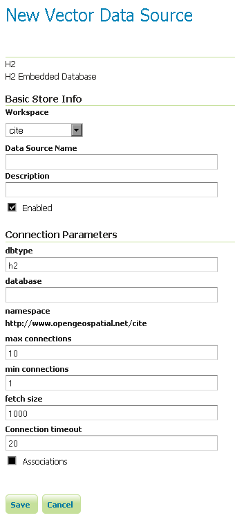

H2¶
주석
GeoServer는 초기 상태에서 H2를 지원하지 못 하기 때문에 확장 모듈(extension)을 설치해야 합니다. 설치 방법은 Installing the H2 extension을 참조하십시오.
Installing the H2 extension¶
GeoServer download page에서 H2 확장 모듈을 다운로드합니다.
경고
GeoServer 인스턴스 버전과 확장 모듈 버전이 일치해야 합니다!
압축 파일의 내용물을 GeoServer 설치 디렉터리의 WEB-INF/lib 디렉터리 안에 풉니다.
Adding an H2 data store¶
확장 모듈을 제대로 설치했다면 새 데이터 저장소를 생성할 때 Vector Data Sources 목록에서 H2 옵션을 볼 수 있을 것입니다.

벡터 데이터 저장소 목록의 H2 옵션
Configuring an H2 data store¶

H2 데이터 저장소 설정하기